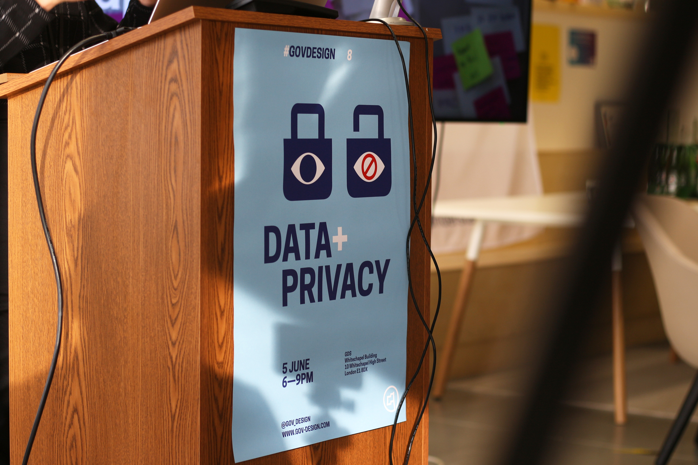

GovDesign Meetup— VISIT GOVDESIGN
Spreading the word
There’s a lot of great design work happening in the public sector at the moment. We felt this needed to be talked about more widely. The GovDesign meetup was setup to connect designers working in, for or with government – to exchange knowledge, share experiences and support each other.
Looking to the past and the future
We’ve had inspiring and diverse speakers from all over the world talk on a wide range of topics from healthcare to large scale infrastructure. We try to bring wide and varying insights on each meetup theme we pick. This enables thoughtful and provoking discussions to happen which otherwise may not occur.
Some GovDesign posters highlighting the event themes
Panel discussion on Design for Healthcare

Meetup 7 on Inclusive Services
Bringing good designers to the public sector
We’ve now run 13 meetups and have a meetup community of around 1,000 people. We’ve helped drum up wider conversations around public sector design and in turn have helped designers gain employment in the public sector – including 3 people at GDS.
Data + Privacy meetup poster
Attendees at a GovDesign meetup